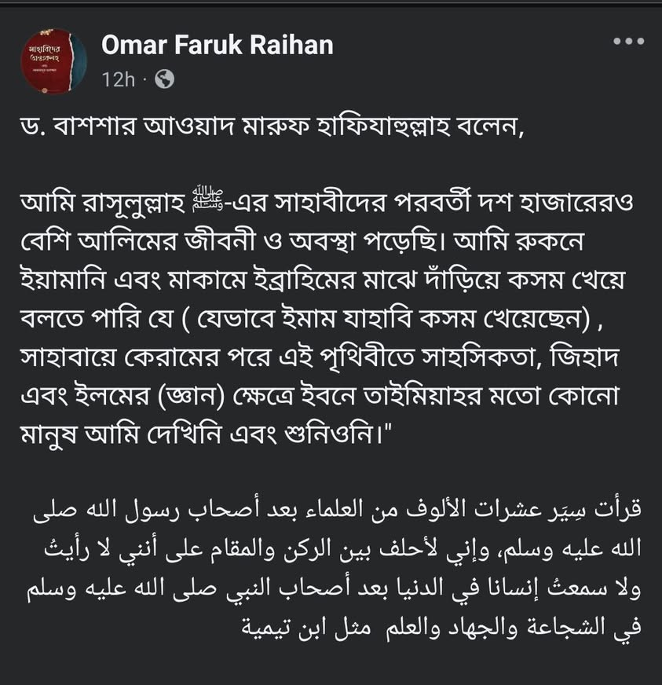

এ কারণেই শিবলি নূমানি রাহ. বলেছিলেন
২ মে, ২০২৬
এ কারণেই শিবলি নূমানি রাহ. বলেছিলেন—
“ইমাম ইবনু তাইমিয়া রাহ-র মাঝে মুজাদ্দিদ হওয়ার যে বৈশিষ্ট্য পরিলক্ষিত হয়েছিলো, তা চার ইমাম (আবু হানিফা, মালেক, শাফেয়ি এবং আহমাদ) এর মাঝেও ছিলো না।” [আন-নাদওয়াহ মাকালাতে শিবলি— ৫/৬৫-৬৬]
এ কারণেই শিবলি নূমানি রাহ. বলেছিলেন—
“ইমাম ইবনু তাইমিয়া রাহ-র মাঝে মুজাদ্দিদ হওয়ার যে বৈশিষ্ট্য পরিলক্ষিত হয়েছিলো, তা চার ইমাম (আবু হানিফা, মালেক, শাফেয়ি এবং আহমাদ) এর মাঝেও ছিলো না।” [আন-নাদওয়াহ মাকালাতে শিবলি— ৫/৬৫-৬৬]
